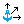

 AnchorXYZ
Component Index > Kangaroo2 > Goals > AnchorXYZ
Fix a point only along chosen world axes. If you need to reset the initial position, disconnect then reconnect the Point input.
Inputs
| Name | ID | Description | Type |
|---|---|---|---|
| Point | P | Point to anchor | Point |
| X | X | True to prevent movement in the X direction | Boolean |
| Y | Y | True to prevent movement in the Y direction | Boolean |
| Z | Z | True to prevent movement in the Z direction | Boolean |
| Strength | Strength | Strength | Number |
Outputs
| Name | ID | Description | Type |
|---|---|---|---|
| A | Anchor XYZ out | Generic Data |
Copyright © 2016 Robert McNeel & Associates.